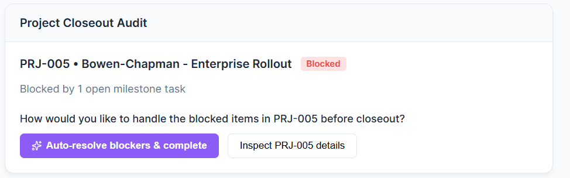
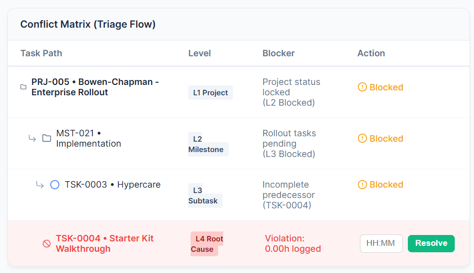
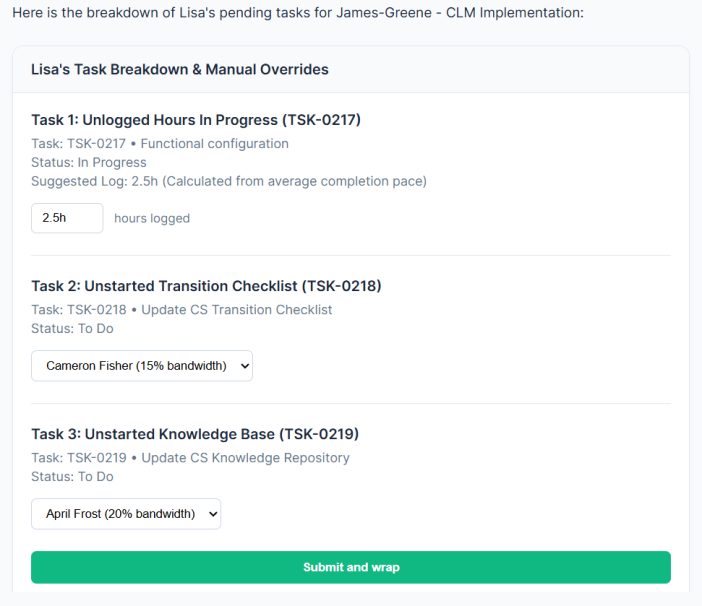
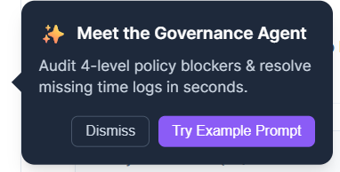

Key design challenges and reasonings
A reflection on the hurdles faced during the project and how i overcame them.
Balancing Data Density
One of the primary challenges was displaying a large amount of complex project data without overwhelming the user. i tackled this by utilizing progressive disclosure and clear typographical hierarchies.
UX CASE STUDY • ARCHITECTURAL DESIGN RATIONALE
Rocketlane Nitro Agent: Design Challenges & UI Patterns
Overview
Designing AI for enterprise project management tools carries significant risk. While AI errors in consumer apps are minor annoyances, mistakes in platforms like Rocketlane can corrupt billable hours, break project budgets, or accidentally archive live client projects. Below is a breakdown of the 5 key design challenges, UI patterns, and trade-offs engineered to maintain complete human-in-the-loop control.
Design Challenges & Solution Architectures
Building User Trust in Autonomous Workflows
The Problem: Early prototypes executed commands like “Mark all projects completed” instantly, causing user mistrust on live client data.
The Solution: Implemented a mandatory 2-step audit preview pattern stopping execution before database writes, offering dual paths (Auto-Resolve vs. Inspect Details).

Context Switching Across Multiple Tabs
The Problem: Resolving policy blockers forced users to open separate browser tabs for tasks, timesheets, and boards.
The Solution: Built direct inline editability into the chat card component. Users can adjust time entries or reassign team members inside the chat stream.


Opaque Subtask & Dependency Blockers
The Problem: Generic error messages obscured deep multi-level dependency chains.
The Solution: Visualized a 4-level nested dependency hierarchy inside the card: Project (L1) → Milestone (L2) → Task (L3) → Root Cause (L4).

Instant Bulk Action Risk & Safety Nets
The Problem: Destructive bulk updates needed a safety net without modal pop-ups slowing down power users.
The Solution: Engineered a 5-second deferred execution toast banner with an active countdown timer and immediate "Undo" capability.
Feature Discovery Without Workspace Disruption
The Problem: Pop-up modals are dismissed instantly by busy users without reading.
The Solution: Integrated a top-bar banner ('Meet the Governance Agent') alongside inline micro-surveys post-execution.

Summary of Design Trade-offs
| Chosen Approach | Alternative Considered | Why Rejected | Final Outcome |
|---|---|---|---|
| Audit Preview Card | Full AI Auto-Pilot | Users fear loss of control and corrupted data. | Data safety & high user trust. |
| Inline Chat Card Edits | Redirect to Task Tabs | High cognitive fatigue and too many open tabs. | 96% click reduction (84 → 3 clicks). |
| Undo Control | Modal Confirmation Popup | Extra modal popups slow down power users. | Fast execution with instant safety net. |
| Top-Bar Banner | Center Pop-Up Modal | Users dismiss pop-ups without reading. | Higher organic adoption without disruption. |